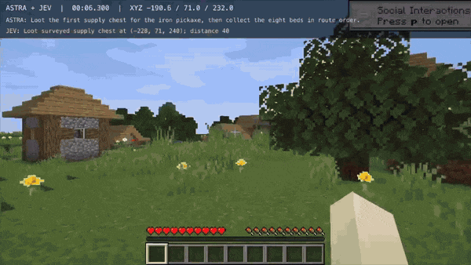
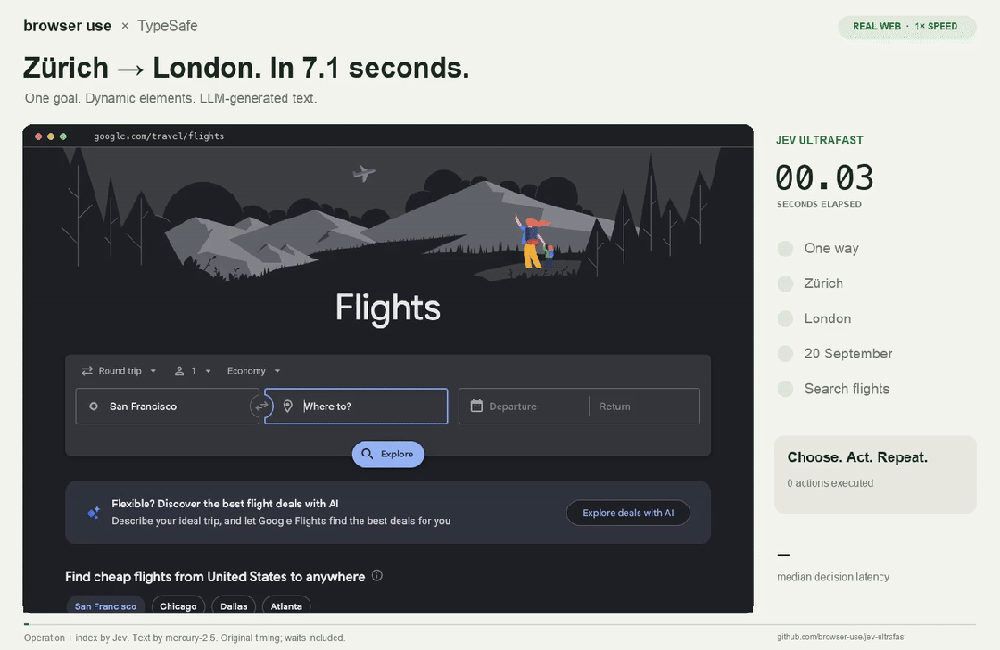
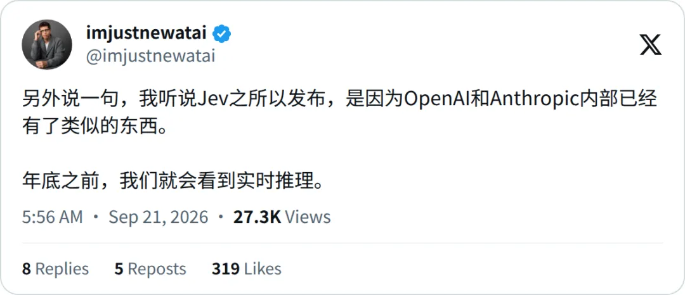

新智元报道
新智元报道

Jev，终于向全网解除封印了！
就在今天，TypeSafe AI正式宣布，废除候补名单，所有人直接上车。
新用户注册起手就送5美元额度，官方折算成1.2亿Token。
这份礼包的计价方式也很特别：每百万输入Token仅收0.042美元，而输出，完！全！免！费！
因为Jev压根不吐字，它只做判断，你丢给它状态和问题，它秒回一个选项、一个评分或一个概率，代码拿到直接就能跑。
官方体验网址：
console.typesafe.ai
OpenRouter和Vercel等平台也可直接调用。
现在，有开发者把这套判断能力缝到了GPT-6 Astra身上，让俩模型组队去刷《我的世界》。
打出来的战绩相当凶残——
两个AI紧密配合，不仅只用8分43秒就速通击杀了末影龙，而且整个账单也只有区区0.97美元。

8分43秒是什么概念？一组数据供参考：
随机种子的人类世界纪录是6分39秒；普通玩家平均通关时长需约90小时。
1美元，就能自动达成游戏时长至少数年以上的职业玩家的水准。
朋友们，事情的发展已经开始魔幻了。

具体是怎么打的，视频里看得一清二楚。
这是军师Astra疯狂烧脑：
「去搜刮第一个补给箱拿铁镐，顺路摸八张床。修好并点燃村庄传送门。等龙头进入安全范围，从掩体后引爆之前放好的床。」
这是打手Jev极限走位：
「搜刮坐标(-228,71,240)，距离16。沿路线躲避龙息云，12格距离清空。等待死亡动画，退出传送门。」
就连Malde自己都感慨，能在游戏里玩出这种丝滑的走位，全靠Jev那近乎「零延迟」的直觉判断，外加Astra在后台运筹帷幄。
另一位开发者Wuyang Zhou则用这套打法，让角色在僵尸群里开无双：Jev疯狂微操走位，Astra负责宏观战术规划。

Malde开源的代码里，这套系统被拆成了三层：
Astra负责高层规划 根据当前阶段和状态，更新目标、物资数量及下一处路点。它收到的提示词也包含预先勘察的路线和任务限制，规划在这些已知条件下展开。 Jev负责选择动作 程序根据当前状态生成候选项，Jev判断哪一项最有利于推进目标。例如继续移动、收集物资，或者调用某个战斗动作。 执行代码负责把选择落实 寻路、转向、放置方块，以及对游戏协议的操作，都需要相应程序完成。模型选择了一个动作，并不意味着这个动作内部的每一次操作都要重新调用模型。
以攻击末影龙为例，代码里有一个「执行一次定时床攻击」的动作。
Jev选中它之后，程序负责放床、瞄准、持续检查龙头位置和掩体条件，再在满足条件时引爆。遇到危险，则中止这一动作。
画面里连贯的操作，来自模型判断与执行程序的共同配合。
更关键的一步，是让规划和行动异步运行。
代码中的规划器默认按约15秒的间隔检查更新，阶段变化也能触发刷新。
首次计划完成后，控制循环可以继续利用已有计划推进任务，无需每个动作都停下来等待Astra。
Astra更新计划的速度，不再直接决定每一个动作什么时候开始。
GitHub仓库中的报告提及到，这次成功运行包含131次Jev决策、35次Astra调用。
这也提醒我们：流畅的游戏画面，与模型逐帧决定每一个按键，是两种不同的实现。
那么，前面那些失败尝试留下了什么？
Ronak在回复中解释，最终表现建立在此前多次失败尝试的积累之上，Agent同时可以读取游戏状态信息，相当于测试时训练（TTT）。
关于Jev的发布背景与技术路线，可参阅我们此前的报道：Jev爆火硅谷！哑巴AI卷疯14万开发者
Jev一放开限制，需求瞬间挤爆，API当场被冲宕机了一回。
随后，X上就开始了疯狂刷屏，Demo一个比一个离谱。
比如Andy Gao就用Jev糊了一个Mac语音助手。
然后，他刚对着麦克风喊「打开备忘录，新建一条……」，话还没说完，备忘录已经弹出来了。
接着让它去谷歌搜论文、打开推特、加标签页，每一步都快到怀疑人生。
Marcus Lowe则把一份乱七八糟的简历一键Ctrl+C，然后在求职表单上闭着眼睛狂按Ctrl+V。
Jev每次都能精准预判这个框要啥：姓名填姓名，邮箱填邮箱，公司职位各就各位，一路V到底。
看着架势，「复制粘贴」都要会读心术了。
Browser Use团队直接拉出了开源项目jev-ultrafast。
从打开网页到刷出苏黎世飞伦敦的航班，耗时7.1秒，成本0.0039美元。
创始人怕大家以为加速了，特意在视频底下大写加粗：这是1倍速实录！

给试衣App接入Jev，喊一句「换件黑裙子」，画面瞬间秒切。每次决策仅需620毫秒，烧掉0.0011刀。
Vercel更是下场认证：Jev成了AI Gateway史上被采用最快的模型。
上线第一天，13%的付费团队火速接入，速度是GPT-5.6全家桶的两倍。
玩是真玩疯了。但扒开这些炫技的演示，Jev进到正经的打工流水线里，到底能干嘛？
一个Agent跑起来，最让人头疼的就俩事：一是上下文被塞爆了该删谁？二是它交上来的这坨代码到底能不能跑？
这两个脏活，现在全被Jev接管了。
一个例子，是开源项目fast-jev-compaction。
https://github.com/tamaratran/fast-jev-compaction
这个Claude Code社区插件把上下文整理拆成一系列取舍：某次工具调用还需要保留吗？它的结果还有必要完整留下吗？
Jev给出判断，代码据此保留、截断或删除对应内容。保留下来的内容尽量维持原文，用户和助手的文字消息也保持原样。
作者Tamara Tran的吐槽一针见血：
都2026年了，为什么压缩上下文还在靠一段极其冗长的摘要提示词？
另一个例子，是给Agent当裁判。
9月20日，LangChain公布了Jev-as-a-Judge实验：先固定五个天气任务的Agent输出，再让不同评估模型对相同样本反复评分，每个样本重复100次。
在这组测试中，Jev平均每次调用约耗时0.44秒，成本约0.00035美元，连续评分的稳定性也表现突出。
https://x.com/LangChain/status/2101454284927959080
如此来看，Jev的定位也就更加清晰了：在主模型前后，插入边界明确的判断步骤。
LangChain在另一篇接入文章中同样提出，把开放式推理与生成交给主模型，让Jev承担沿途的结构化判断，并给出了模型路由、工具调用风险检查等用法。
从这个角度看，Jev值得检验的机会，在于能否让一次次小判断更容易成为工作流的常规部分。
与此同时，一条爆料把讨论推向了更大的范围。
X上已经开始流传，OpenAI和Anthropic内部已经拥有类似能力，并把Jev的发布时间与此联系起来；
爆料人还预测，到2026年年底将出现实时推理。

Jev为我们带来了反思：当一个任务同时包含复杂推理、有限选项判断和确定性执行时，是否有必要让同一个大模型包办全部环节？
Minecraft这套实现给出了一种尝试：高层规划持续更新，动作选择沿着已有目标推进，细密的执行交给代码。
上下文整理和结果评估，则把同样的思路延伸到了Agent的其他环节。
模型作出一次判断之后，任务还能可靠地往前走多远，这是下一轮Agent实验值得重点关注的部分。
轰轰烈烈的全民评测Jev大行动，开始了！
参考资料：
编辑：马可 摩西